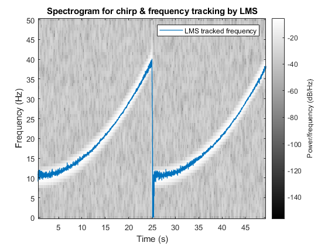

Contents
- ============================== Question 1 ==============================
- ----------- Non-parametric method: Spectrogram
- ----------- Parametric method: AR-model and adaptive filter (page 347)
- Calculate model parameters theta and errors
- Calculate angles of roots of the transfer functions by LMS, RLS & KF
- Plot estimated frequencies against spectrogram
- Plot estimated time against estimated frequencies
- Help functions
% Homework 4 - Adaptive filtering % Matheus Bernat (matvi959) addpath ../CourseLib addpath ../dsp
============================== Question 1 ==============================
Methods to estimate and track the frequencies of a signal
signal = load('y.mat'); y = signal.y; N = length(y); fs = 100; % [Hz] T = 1/fs; % [s] timeVec = (0:N-1)*T; freqHz = (0:N-1)*fs/N; %sound(y) figure(1); subplot(2,1,1); plot(timeVec, y); xlabel('Time [s]'); Y = fft(y); subplot(2,1,2); plot(freqHz,Y); xlabel('Frequency [Hz]');
----------- Non-parametric method: Spectrogram
figure(2); spectrogram(y, kaiser(128,18),120,128,fs,'yaxis'); title('Spectrogram for chirp');
----------- Parametric method: AR-model and adaptive filter (page 347)
Adaptive filters can be used to analyze the frequency content of a signal as a function of time.
% Select best model order figure(44); arorder(y,70); legend('Minimal loss function','Akaikes information criterion (AIC)',... 'Akikes information criterion B (BIC)'); xlabel('AR-model order'); maxOrder = 100; bestOrder = 2; % According to the AIC/BIC values in the plot above, model orders of 2, 4, % 6 and 8 are interesting given that big drops in the values of AIC/BIC % happens then. Model order 2 is chosen to continue the exercise, since a % chirp signal is made of a sine with increasing frequency, and sines % z-transform contains only 2 poles.
Calculate model parameters theta and errors
clc; % ---------------- LMS, page 336 mu = 0.15; % step-length [th_lms, err_lms] = my_arlms(y, bestOrder, mu); % model parameters and error through time % ---------------- RLS, page 340 lambda = 0.92; % forgetting-factor [th_rls,Pt_rls,err_rls] = arrls(y, bestOrder, lambda); % lambda is a design parameter, between 0 and 1. If it equals 1: all errors % in the loss function are considered % ---------------- KF Q = [0.05 0; 0 0]; % process noise covariance [th_kf,Pt_kf,err_kf] = my_arkf(y, bestOrder, Q); % Q is a design parameter, it stands for the covariance of process noise. % It is a 2x2 matrix. %---------------- Total tracking errors totalErr_lms = sum(err_lms) % 8.8028 totalErr_rls = sum(err_rls) % 11.9827 totalErr_kf = sum(err_kf) % 13.0962 % QUESTION: Which filter has the smallest tracking error? % ANSWER: with the current design parameters, the filter that gives the % smallest tracking error is the model parameters chosen by LMS.
Calculate angles of roots of the transfer functions by LMS, RLS & KF
poleArgs_lms = zeros(N, bestOrder); poleArgs_rls = zeros(N, bestOrder); poleArgs_kf = zeros(N, bestOrder); for t = 1:N poleArgs_lms(t,:) = angle(roots([1 th_lms(:,t)'])); poleArgs_rls(t,:) = angle(roots([1 th_rls(:,t)'])); poleArgs_kf(t,:) = angle(roots([1 th_kf(:,t)'])); end % By getting the roots of the denominator of H(q) (where y(t)=H(q)*e(t)), % we find where the poles of this transfer function are. Then, we calculate % the angles to each one of these 45 poles, for each time t from 1 to 5000.
Plot estimated frequencies against spectrogram
% ANSWER: See plot below. clf; figure(6); spectrogram(y, kaiser(128,18),120,128,fs,'yaxis'); colormap gray; title('Spectrogram for chirp & frequency tracking by LMS'); hold on; plot(timeVec, poleArgs_lms(:,1)*fs/(2*pi),'LineWidth',1); legend('LMS tracked frequency'); figure(7); spectrogram(y, kaiser(128,18),120,128,fs,'yaxis'); colormap gray; title('Spectrogram for chirp & frequency tracking by RLS'); hold on; plot(timeVec, poleArgs_rls(:,1)*fs/(2*pi), '-r', 'LineWidth',1); legend('RLS tracked frequency'); figure(8); spectrogram(y, kaiser(128,18),120,128,fs,'yaxis'); colormap gray; title('Spectrogram for chirp & frequency tracking by KF'); hold on; plot(timeVec, poleArgs_kf(:,1)*fs/(2*pi),'-y', 'LineWidth',1); legend('KF tracked frequency'); % All plots in one figure: figure(9);clf; spectrogram(y, kaiser(128,18),120,128,fs,'yaxis'); colormap gray; hold on; plot(timeVec, poleArgs_lms(:,1)*fs/(2*pi),'LineWidth',1); hold on; plot(timeVec, poleArgs_rls(:,1)*fs/(2*pi), 'LineWidth',1); hold on; plot(timeVec, poleArgs_kf(:,1)*fs/(2*pi), 'LineWidth',1); legend('LMS','RLS','KF'); title('Spectrogram for chirp & frequency tracking by LMS, RLS & KF'); % QUESTION: How can the fact the Kalman filter allows for different % adaption rates of the model parameters be used to improve the performance % of the frequency tracking? % ANSWER: The Q matrix (process noise covariance matrix) does not need to % be diagonal. If we set Q = [q 0; 0 0] we'll only permit a1 to adapt while % a2 will converge to a constant value. So one can model the Q-matrix % depending on the wished radius of the poles. Better tracking with the KF % was achieved when setting the Q-matrix this way.

Plot estimated time against estimated frequencies
% LMS figure(3); subplot(2,1,1);plot(timeVec,th_lms); title('Parameter tracking LMS'); xlabel('Time [s]'); legend('a_1','a_2'); subplot(2,1,2);plot(timeVec, poleArgs_lms); title('Angles of poles given by LMS'); xlabel('Time [s]'); subplot(2,1,2); legend('$\varphi_1$', '$\varphi_2$','Interpreter','latex'); % RLS figure(4); subplot(2,1,1);plot(timeVec,th_rls); title('Parameter tracking RLS'); xlabel('Time [s]'); legend('a_1','a_2'); subplot(2,1,2);plot(timeVec, poleArgs_rls); title('Angles of poles given by RLS'); xlabel('Time [s]'); subplot(2,1,2); legend('$\varphi_1$', '$\varphi_2$','Interpreter','latex'); % LMS figure(5); subplot(2,1,1);plot(timeVec,th_kf); title('Parameter tracking KF'); xlabel('Time [s]'); legend('a_1','a_2'); subplot(2,1,2);plot(timeVec, poleArgs_kf); title('Angles of poles given by KF'); xlabel('Time [s]'); subplot(2,1,2); legend('$\varphi_1$', '$\varphi_2$','Interpreter','latex');

Help functions
function [th, err] = my_arlms(y,order,mu) N = length(y); th = zeros(order, N); % model order rows & N columns err = zeros(1,N); % phi(i) for i < order is set to 0. Therefore the for-loop starts % on order+1. See e.g. solution of exercise 9.6 for t = (order+1):N phi = -y(t-1:-1:t-order, :); % See definition of phi in lecture 6 th(:,t) = th(:,t-1) + mu*phi*(y(t) - phi'*th(:, t-1)); % page 337 err(:,t) = y(t) - phi'*th(:,t); % Difference between real value and prediction end end function [tht,Pt,epsi]=my_arkf(y,na,Q) %RLS for adaptive AR parameter estimation if nargin<3; Q=0.01*eye(na); end N=length(y); th=zeros(na,1); P=100*eye(na); for t=na+1:N phi=-y(t-1:-1:t-na,:); K=P*phi./(1+phi'*P*phi); P=P-K*phi'*P+Q; epsi(:,t)=y(t)-phi'*th; th=th+K*epsi(:,t); tht(:,t)=th; Pt(:,:,t)=P; end end
totalErr_lms =
8.8028
totalErr_rls =
11.9827
totalErr_kf =
13.0962